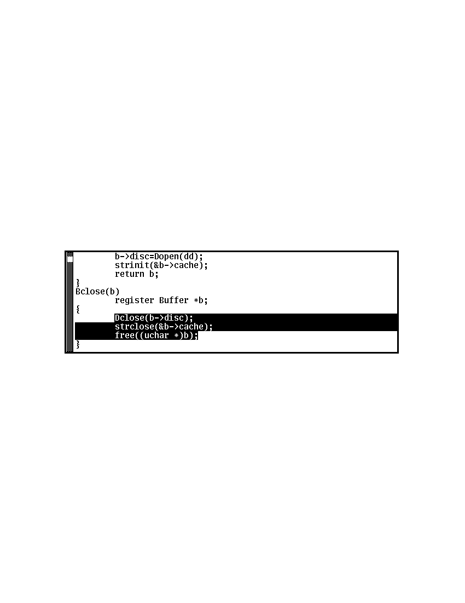
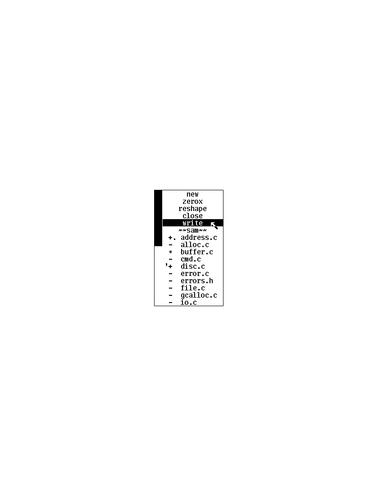
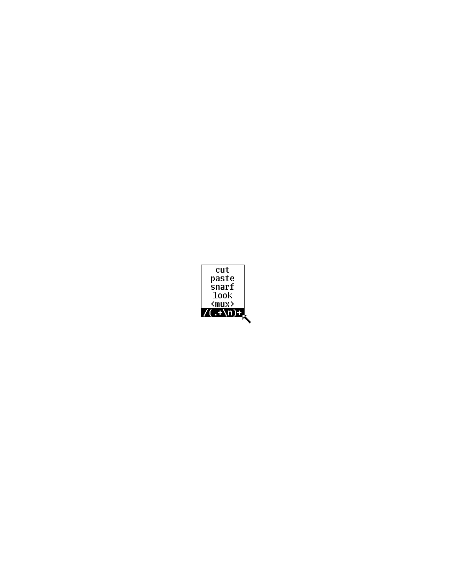

The Text Editor sam
- Rob Pike
rob@plan9.bell-labs.com
ABSTRACT
Sam
is an interactive multi-file text editor intended for
bitmap displays.
A textual command language
supplements the mouse-driven, cut-and-paste interface
to make complex or
repetitive editing tasks easy to specify.
The language is characterized by the composition of regular expressions
to describe the structure of the text being modified.
The treatment of files as a database, with changes logged
as atomic transactions, guides the implementation and
makes a general `undo' mechanism straightforward.
Sam
is implemented as two processes connected by a low-bandwidth stream,
one process handling the display and the other the editing
algorithms. Therefore it can run with the display process
in a bitmap terminal and the editor on a local host,
with both processes on a bitmap-equipped host, or with
the display process in the terminal and the editor in a
remote host.
By suppressing the display process,
it can even run without a bitmap terminal.
This paper is reprinted from SoftwarePractice and Experience,
Vol 17, number 11, pp. 813-845, November 1987.
The paper has not been updated for the Plan 9 manuals. Although
Sam
has not changed much since the paper was written, the system around it certainly has.
Nonetheless, the description here still stands as the best introduction to the editor.
Introduction
Sam
is an interactive text editor that combines cut-and-paste interactive editing with
an unusual command language based on the composition of regular expressions.
It is written as two programs: one, the `host part,' runs on a UNIX system
and implements the command language and provides file access; the other, the
`terminal part,' runs asynchronously
on a machine with a mouse and bitmap display
and supports the display and interactive editing.
The host part may be even run in isolation on an ordinary terminal
to edit text using the command
language, much like a traditional line editor,
without assistance from a mouse or display.
Most often,
the terminal part runs on a Blit1 terminal
(actually on a Teletype DMD 5620, the production version of the Blit), whose
host connection is an ordinary 9600 bps RS232 link;
on the SUN computer the host and display processes run on a single machine,
connected by a pipe.
Sam
edits uninterpreted
ASCII text.
It has no facilities for multiple fonts, graphics or tables,
unlike MacWrite,2 Bravo,3 Tioga4
or Lara.5
Also unlike them, it has a rich command language.
(Throughout this paper, the phrase
command language
refers to
textual commands; commands activated from the mouse form the
mouse
language.)
Sam
developed as an editor for use by programmers, and tries to join
the styles of the UNIX text editor
ed6,7
with that of interactive cut-and-paste editors by
providing a comfortable mouse-driven interface
to a program with a solid command language driven by regular expressions.
The command language developed more than the mouse language, and
acquired a notation for describing the structure of files
more richly than as a sequence of lines,
using a dataflow-like syntax for specifying changes.
The interactive style was influenced by
jim,1
an early cut-and-paste editor for the Blit, and by
mux,8
the Blit window system.
Mux
merges the original Blit window system,
mpx,1
with cut-and-paste editing, forming something like a
multiplexed version of
jim
that edits the output of (and input to) command sessions rather than files.
The first part of this paper describes the command language, then the mouse
language, and explains how they interact.
That is followed by a description of the implementation,
first of the host part, then of the terminal part.
A principle that influenced the design of
sam
is that it should have no explicit limits, such as upper limits on
file size or line length.
A secondary consideration is that it be efficient.
To honor these two goals together requires a method for efficiently
manipulating
huge strings (files) without breaking them into lines,
perhaps while making thousands of changes
under control of the command language.
Sam's
method is to
treat the file as a transaction database, implementing changes as atomic
updates. These updates may be unwound easily to `undo' changes.
Efficiency is achieved through a collection of caches that minimizes
disc traffic and data motion, both within the two parts of the program
and between them.
The terminal part of
sam
is fairly straightforward.
More interesting is how the two halves of the editor stay
synchronized when either half may initiate a change.
This is achieved through a data structure that organizes the
communications and is maintained in parallel by both halves.
The last part of the paper chronicles the writing of
sam
and discusses the lessons that were learned through its development and use.
The paper is long, but is composed largely of two papers of reasonable length:
a description of the user interface of
sam
and a discussion of its implementation.
They are combined because the implementation is strongly influenced by
the user interface, and vice versa.
The Interface
Sam
is a text editor for multiple files.
File names may be provided when it is invoked:
sam file1 file2 ...
and there are commands
to add new files and discard unneeded ones.
Files are not read until necessary
to complete some command.
Editing operations apply to an internal copy
made when the file is read; the UNIX file associated with the copy
is changed only by an explicit command.
To simplify the discussion, the internal copy is here called a
file,
while the disc-resident original is called a
disc file.
Sam
is usually connected to a bitmap display that presents a cut-and-paste
editor driven by the mouse.
In this mode, the command language is still available:
text typed in a special window, called the
sam
window,
is interpreted
as commands to be executed in the current file.
Cut-and-paste editing may be used in any window even in the
sam
window to construct commands.
The other mode of operation, invoked by starting
sam
with the option
-d
(for `no download'),
does not use the mouse or bitmap display, but still permits
editing using the textual command language, even on an ordinary terminal,
interactively or from a script.
The following sections describe first the command language (under
sam -d
and in the
sam
window), and then the mouse interface.
These two languages are nearly independent, but connect through the
current
text,
described below.
The Command Language
A file consists of its contents, which are an array of characters
(that is, a string); the
name
of the associated disc file; the
modified bit
that states whether the contents match those of
the disc file;
and a substring of the contents, called the
current text
or
dot
(see Figures 1 and 2).
If the current text is a null string, dot falls between characters.
The
value
of dot is the location of the current text; the
contents
of dot are the characters it contains.
Sam
imparts to the text no two-dimensional interpretation such as columns
or fields; text is always one-dimensional.
Even the idea of a `line' of text as understood by most UNIX programs
a sequence of characters terminated by a newline character
is only weakly supported.
The
current file
is the file to which editing commands refer.
The current text is therefore dot in the current file.
If a command doesn't explicitly name a particular file or piece of text,
the command is assumed to apply to the current text.
For the moment, ignore the presence of multiple files and consider
editing a single file.

Figure 1. A typical
sam
screen, with the editing menu presented.
The
sam
(command language) window is in the middle, with file windows above and below.
(The user interface makes it easy to create these abutting windows.)
The partially obscured window is a third file window.
The uppermost window is that to which typing and mouse operations apply,
as indicated by its heavy border.
Each window has its current text highlighted in reverse video.
The
sam
window's current text is the null string on the last visible line,
indicated by a vertical bar.
See also Figure 2.
Commands have one-letter names.
Except for non-editing commands such as writing
the file to disc, most commands make some change
to the text in dot and leave dot set to the text resulting from the change.
For example, the delete command,
d,
deletes the text in dot, replacing it by the null string and setting dot
to the result.
The change command,
c,
replaces dot by text delimited by an arbitrary punctuation character,
conventionally
a slash. Thus,
c/Peter/
replaces the text in dot by the string
Peter.
Similarly,
a/Peter/
(append) adds the string after dot, and
i/Peter/
(insert) inserts before dot.
All three leave dot set to the new text,
Peter.
Newlines are part of the syntax of commands:
the newline character lexically terminates a command.
Within the inserted text, however, newlines are never implicit.
But since it is often convenient to insert multiple lines of text,
sam
has a special
syntax for that case:
a
some lines of text
to be inserted in the file,
terminated by a period
on a line by itself
.
In the one-line syntax, a newline character may be specified by a C-like
escape, so
c/\n/
replaces dot by a single newline character.
Sam
also has a substitute command,
s:
s/expression/replacement/
substitutes the replacement text for the first match, in dot,
of the regular expression.
Thus, if dot is the string
Peter,
the command
s/t/st/
changes it to
Pester.
In general,
s
is unnecessary, but it was inherited from
ed
and it has some convenient variations.
For instance, the replacement text may include the matched text,
specified by
&:
s/Peter/Oh, &, &, &, &!/
There are also three commands that apply programs
to text:
< UNIX program
replaces dot by the output of the UNIX program.
Similarly, the
>
command
runs the program with dot as its standard input, and
|
does both. For example,
| sort
replaces dot by the result of applying the standard sorting utility to it.
Again, newlines have no special significance for these
sam
commands.
The text acted upon and resulting from these commands is not necessarily
bounded by newlines, although for connection with UNIX programs,
newlines may be necessary to obey conventions.
One more command:
p
prints the contents of dot.
Table I summarizes
sam's
commands.

The value of dot may be changed by
specifying an
address
for the command.
The simplest address is a line number:
3
refers to the third line of the file, so
3d
deletes the third line of the file, and implicitly renumbers
the lines so the old line 4 is now numbered 3.
(This is one of the few places where
sam
deals with lines directly.)
Line
0
is the null string at the beginning of the file.
If a command consists of only an address, a
p
command is assumed, so typing an unadorned
3
prints line 3 on the terminal.
There are a couple of other basic addresses:
a period addresses dot itself; and
a dollar sign
($)
addresses the null string at the end of the file.
An address is always a single substring of the file.
Thus, the address
3
addresses the characters
after the second newline of
the file through the third newline of the file.
A
compound address
is constructed by the comma operator
address1,address2
and addresses the substring of the file from the beginning of
address1
to the end of
address2.
For example, the command
3,5p
prints the third through fifth lines of the file and
.,$d
deletes the text from the beginning of dot to the end of the file.
These addresses are all absolute positions in the file, but
sam
also has relative addresses, indicated by
+
or
-.
For example,
$-3
is the third line before the end of the file and
.+1
is the line after dot.
If no address appears to the left of the
+
or
-,
dot is assumed;
if nothing appears to the right,
1
is assumed.
Therefore,
.+1
may be abbreviated to just a plus sign.
The
+
operator acts relative to the end of its first argument, while the
-
operator acts relative to the beginning. Thus
.+1
addresses the first line after dot,
.-
addresses the first line before dot, and
+-
refers to the line containing the end of dot. (Dot may span multiple lines, and
+
selects the line after the end of dot, then
-
backs up one line.)
The final type of address is a regular expression, which addresses the
text matched by the expression. The expression is enclosed in slashes, as in
/expression/
The expressions are the same as those in the UNIX program
egrep,6,7
and include closures, alternations, and so on.
They find the
leftmost longest
string that matches the expression, that is,
the first match after the point where the search is started,
and if more than one match begins at the same spot, the longest such match.
(I assume familiarity with the syntax for regular expressions in UNIX programs.9)
For example,
/x/
matches the next
x
character in the file,
/xx*/
matches the next run of one or more
x's,
and
/x|Peter/
matches the next
x
or
Peter.
For compatibility with other UNIX programs, the `any character' operator,
a period,
does not match a newline, so
/.*/
matches the text from dot to the end of the line, but excludes the newline
and so will not match across
the line boundary.
Regular expressions are always relative addresses.
The direction is forwards by default,
so
/Peter/
is really an abbreviation for
+/Peter/.
The search can be reversed with a minus sign, so
-/Peter/
finds the first
Peter
before dot.
Regular expressions may be used with other address forms, so
0+/Peter/
finds the first
Peter
in the file and
$-/Peter/
finds the last.
Table II summarizes
sam's
addresses.

The language discussed so far will not seem novel
to people who use UNIX text editors
such as
ed
or
vi.9
Moreover, the kinds of editing operations these commands allow, with the exception
of regular expressions and line numbers,
are clearly more conveniently handled by a mouse-based interface.
Indeed,
sam's
mouse language (discussed at length below) is the means by which
simple changes are usually made.
For large or repetitive changes, however, a textual language
outperforms a manual interface.
Imagine that, instead of deleting just one occurrence of the string
Peter,
we wanted to eliminate every
Peter.
What's needed is an iterator that runs a command for each occurrence of some
text.
Sam's
iterator is called
x,
for extract:
x/expression/ command
finds all matches in dot of the specified expression, and for each
such match, sets dot to the text matched and runs the command.
So to delete all the
Peters:
0,$ x/Peter/ d
(Blanks in these examples are to improve readability;
sam
neither requires nor interprets them.)
This searches the entire file
(0,$)
for occurrences of the string
Peter,
and runs the
d
command with dot set to each such occurrence.
(By contrast, the comparable
ed
command would delete all
lines
containing
Peter;
sam
deletes only the
Peters.)
The address
0,$
is commonly used, and may be abbreviated to just a comma.
As another example,
, x/Peter/ p
prints a list of
Peters,
one for each appearance in the file, with no intervening text (not even newlines
to separate the instances).
Of course, the text extracted by
x
may be selected by a regular expression,
which complicates deciding what set of matches is chosen
matches may overlap. This is resolved by generating the matches
starting from the beginning of dot using the leftmost-longest rule,
and searching for each match starting from the end of the previous one.
Regular expressions may also match null strings, but a null match
adjacent to a non-null match is never selected; at least one character
must intervene.
For example,
, c/AAA/
x/B*/ c/-/
, p
produces as output
-A-A-A-
because the pattern
B*
matches the null strings separating the
A's.
The
x
command has a complement,
y,
with similar syntax, that executes the command with dot set to the text
between
the matches of the expression.
For example,
, c/AAA/
y/A/ c/-/
, p
produces the same result as the example above.
The
x
and
y
commands are looping constructs, and
sam
has a pair of conditional commands to go with them.
They have similar syntax:
g/expression/ command
(guard)
runs the command exactly once if dot contains a match of the expression.
This is different from
x,
which runs the command for
each
match:
x
loops;
g
merely tests, without changing the value of dot.
Thus,
, x/Peter/ d
deletes all occurrences of
Peter,
but
, g/Peter/ d
deletes the whole file (reduces it to a null string) if
Peter
occurs anywhere in the text.
The complementary conditional is
v,
which runs the command if there is
no
match of the expression.
These control-structure-like commands may be composed to construct more
involved operations. For example, to print those lines of text that
contain the string
Peter:
, x/.*\n/ g/Peter/ p
The
x
breaks the file into lines, the
g
selects those lines containing
Peter,
and the
p
prints them.
This command gives an address for the
x
command (the whole file), but because
g
does not have an explicit address, it applies to the value of
dot produced by the
x
command, that is, to each line.
All commands in
sam
except for the command to write a file to disc use dot for the
default address.
Composition may be continued indefinitely.
, x/.*\n/ g/Peter/ v/SaltPeter/ p
prints those lines containing
Peter
but
not
those containing
SaltPeter.
Structural Regular Expressions
Unlike other UNIX text editors,
including the non-interactive ones such as
sed
and
awk,7
sam
is good for manipulating files with multi-line `records.'
An example is an on-line phone book composed of records,
separated by blank lines, of the form
Herbert Tic
44 Turnip Ave., Endive, NJ
201-5555642
Norbert Twinge
16 Potato St., Cabbagetown, NJ
201-5553145
...
The format may be encoded as a regular expression:
(.+\n)+
that is, a sequence of one or more non-blank lines.
The command to print Mr. Tic's entire record is then
, x/(.+\n)+/ g/^Herbert Tic$/ p
and that to extract just the phone number is
, x/(.+\n)+/ g/^Herbert Tic$/ x/^[0-9]*-[0-9]*\n/ p
The latter command breaks the file into records,
chooses Mr. Tic's record,
extracts the phone number from the record,
and finally prints the number.
A more involved problem is that of
renaming a particular variable, say
n,
to
num
in a C program.
The obvious first attempt,
, x/n/ c/num/
is badly flawed: it changes not only the variable
n
but any letter
n
that appears.
We need to extract all the variables, and select those that match
n
and only
n:
, x/[A-Za-z_][A-Za-z_0-9]*/ g/n/ v/../ c/num/
The pattern
[A-Za-z_][A-Za-z_0-9]*
matches C identifiers.
Next
g/n/
selects those containing an
n.
Then
v/../
rejects those containing two (or more) characters, and finally
c/num/
changes the remainder (identifiers
n)
to
num.
This version clearly works much better, but there may still be problems.
For example, in C character and string constants, the sequence
0fP
is interpreted as a newline character, and we don't want to change it to
0m.
This problem can be forestalled with a
y
command:
, y/\\n/ x/[A-Za-z_][A-Za-z_0-9]*/ g/n/ v/../ c/num/
(the second
\fP
is necessary because of lexical conventions in regular expressions),
or we could even reject character constants and strings outright:
,y/'[^']*'/ y/"[^"]*"/ x/[A-Za-z_][A-Za-z_0-9]*/ g/n/ v/../ c/num/
The
y
commands in this version exclude from consideration all character constants
and strings.
The only remaining problem is to deal with the possible occurrence of
'
or
within these sequences, but it's easy to see how to resolve this difficulty.
The point of these composed commands is successive refinement.
A simple version of the command is tried, and if it's not good enough,
it can be honed by adding a clause or two.
(Mistakes can be undone; see below.
Also, the mouse language makes it unnecessary to retype the command each time.)
The resulting chains of commands are somewhat reminiscent of
shell pipelines.7
Unlike pipelines, though, which pass along modified
data,
sam
commands pass a
view
of the data.
The text at each step of the command is the same, but which pieces
are selected is refined step by step until the correct piece is
available to the final step of the command line, which ultimately makes the change.
In other UNIX programs, regular expressions are used only for selection,
as in the
sam
g
command, never for extraction as in the
x
or
y
command.
For example, patterns in
awk7
are used to select lines to be operated on, but cannot be used
to describe the format of the input text, or to handle newline-free text.
The use of regular expressions to describe the structure of a piece
of text rather than its contents, as in the
x
command,
has been given a name:
structural regular expressions.
When they are composed, as in the above example,
they are pleasantly expressive.
Their use is discussed at greater length elsewhere.10
Multiple files
Sam
has a few other commands, mostly relating to input and output.
e discfilename
replaces the contents and name of the current file with those of the named
disc file;
w discfilename
writes the contents to the named disc file; and
r discfilename
replaces dot with the contents of the named disc file.
All these commands use the current file's name if none is specified.
Finally,
f discfilename
changes the name associated with the file and displays the result:
'-. discfilename
This output is called the file's
menu line,
because it is the contents of the file's line in the button 3 menu (described
in the
next section).
The first three characters are a concise notation for the state of the file.
The apostrophe signifies that the file is modified.
The minus sign indicates the number of windows
open on the file (see the next section):
-
means none,
+
means one, and
*
means more than one.
Finally, the period indicates that this is the current file.
These characters are useful for controlling the
X
command, described shortly.
Sam
may be started with a set of disc files (such as all the source for
a program) by invoking it with a list of file names as arguments, and
more may be added or deleted on demand.
B discfile1 discfile2 ...
adds the named files to
sam's
list, and
D discfile1 discfile2 ...
removes them from
sam's
memory (without effect on associated disc files).
Both these commands have a syntax for using the shell7
(the UNIX command interpreter) to generate the lists:
B <echo *.c
will add all C source files, and
B <grep -l variable *.c
will add all C source files referencing a particular variable
(the UNIX command
grep -l
lists all files in its arguments that contain matches of
the specified regular expression).
Finally,
D
without arguments deletes the current file.
There are two ways to change which file is current:
b filename
makes the named file current.
The
B
command
does the same, but also adds any new files to
sam's
list.
(In practice, of course, the current file
is usually chosen by mouse actions, not by textual commands.)
The other way is to use a form of address that refers to files:
"expression" address
refers to the address evaluated in the file whose menu line
matches the expression (there must be exactly one match).
For example,
"peter.c" 3
refers to the third line of the file whose name matches
peter.c.
This is most useful in the move
(m)
and copy
(t)
commands:
0,$ t "peter.c" 0
makes a copy of the current file at the beginning of
peter.c.
The
X
command
is a looping construct, like
x,
that refers to files instead of strings:
X/expression/ command
runs the command in all
files whose menu lines match the expression. The best example is
X/'/ w
which writes to disc all modified files.
Y
is the complement of
X:
it runs the command on all files whose menu lines don't match the expression:
Y/\.c/ D
deletes all files that don't have
.c
in their names, that is, it keeps all C source files and deletes the rest.
Braces allow commands to be grouped, so
{
command1
command2
}
is syntactically a single command that runs two commands.
Thus,
X/\.c/ ,g/variable/ {
f
, x/.*\n/ g/variable/ p
}
finds all occurrences of
variable
in C source files, and prints
out the file names and lines of each match.
The precise semantics of compound operations is discussed in the implementation
sections below.
Finally,
the undo command,
u,
undoes the last command,
no matter how many files were affected.
Multiple undo operations move further back in time, so
u
u
(which may be abbreviated
u2)
undoes the last two commands. An undo may not be undone, however, nor
may any command that adds or deletes files.
Everything else is undoable, though, including for example
e
commands:
e filename
u
restores the state of the file completely, including its name, dot,
and modified bit. Because of the undo, potentially dangerous commands
are not guarded by confirmations. Only
D,
which destroys the information necessary to restore itself, is protected.
It will not delete a modified file, but a second
D
of the same file will succeed regardless.
The
q
command, which exits
sam,
is similarly guarded.
Mouse Interface
Sam
is most commonly run
connected to a bitmap display and mouse for interactive editing.
The only difference in the command language
between regular, mouse-driven
sam
and
sam -d
is that if an address
is provided without a command,
sam -d
will print the text referenced by the address, but
regular
sam
will highlight it on the screen in fact,
dot is always highlighted (see Figure 2).

Figure 2. A
sam
window. The scroll bar down the left
represents the file, with the bubble showing the fraction
visible in the window.
The scroll bar may be manipulated by the mouse for convenient browsing.
The current text,
which is highlighted, need not fit on a line. Here it consists of one partial
line, one complete line, and final partial line.
Each file may have zero or more windows open on the display.
At any time, only one window in all of
sam
is the
current window,
that is, the window to which typing and mouse actions refer;
this may be the
sam
window (that in which commands may be typed)
or one of the file windows.
When a file has multiple windows, the image of the file in each window
is always kept up to date.
The current file is the last file affected by a command,
so if the
sam
window is current,
the current window is not a window on the current file.
However, each window on a file has its own value of dot,
and when switching between windows on a single file,
the file's value of dot is changed to that of the window.
Thus, flipping between windows behaves in the obvious, convenient way.
The mouse on the Blit has three buttons, numbered left to right.
Button 3 has a list of commands to manipulate windows,
followed by a list of `menu lines' exactly as printed by the
f
command, one per file (not one per window).
These menu lines are sorted by file name.
If the list is long, the Blit menu software will make it more manageable
by generating a scrolling menu instead of an unwieldy long list.
Using the menu to select a file from the list makes that file the current
file, and the most recently current window in that file the current window.
But if that file is already current, selecting it in the menu cycles through
the windows on the file; this simple trick avoids a special menu to
choose windows on a file.
If there is no window open on the file,
sam
changes the mouse cursor to prompt the user to create one.
The commands on the button 3 menu are straightforward (see Figure 3), and
are like the commands to manipulate windows in
mux,8
the Blit's window system.
New
makes a new file, and gives it one empty window, whose size is determined
by a rectangle swept by the mouse.
Zerox
prompts for a window to be selected, and
makes a clone of that window; this is how multiple windows are created on one file.
Reshape
changes the size of the indicated window, and
close
deletes it. If that is the last window open on the file,
close
first does a
D
command on the file.
Write
is identical to a
w
command on the file; it is in the menu purely for convenience.
Finally,
~~sam~~
is a menu item that appears between the commands and the file names.
Selecting it makes the
sam
window the current window,
causing subsequent typing to be interpreted as commands.

Figure 3. The menu on button 3.
The black rectangle on the left is a scroll bar; the menu is limited to
the length shown to prevent its becoming unwieldy.
Above the
~~sam~~
line is a list of commands;
beneath it is a list of files, presented exactly as with the
f
command.
When
sam
requests that a window be swept, in response to
new,
zerox
or
reshape,
it changes the mouse cursor from the usual arrow to a box with
a small arrow.
In this state, the mouse may be used to indicate an arbitrary rectangle by
pressing button 3 at one corner and releasing it at the opposite corner.
More conveniently,
button 3 may simply be clicked,
whereupon
sam
creates the maximal rectangle that contains the cursor
and abuts the
sam
window.
By placing the
sam
window in the middle of the screen, the user can define two regions (one above,
one below) in which stacked fully-overlapping
windows can be created with minimal fuss (see Figure 1).
This simple user interface trick makes window creation noticeably easier.
The cut-and-paste editor is essentially the same as that in Smalltalk-80.11
The text in dot is always highlighted on the screen.
When a character is typed it replaces dot, and sets dot to the null
string after the character. Thus, ordinary typing inserts text.
Button 1 is used for selection:
pressing the button, moving the mouse, and lifting the button
selects (sets dot to) the text between the points where the
button was pressed and released.
Pressing and releasing at the same point selects a null string; this
is called clicking. Clicking twice quickly, or
double clicking,
selects larger objects;
for example, double clicking in a word selects the word,
double clicking just inside an opening bracket selects the text
contained in the brackets (handling nested brackets correctly),
and similarly for
parentheses, quotes, and so on.
The double-clicking rules reflect a bias toward
programmers.
If
sam
were intended more for word processing, double-clicks would probably
select linguistic structures such as sentences.
If button 1 is pressed outside the current window, it makes the indicated
window current.
This is the easiest way to switch between windows and files.
Pressing button 2 brings up a menu of editing functions (see Figure 4).
These mostly apply to the selected text:
cut
deletes the selected text, and remembers it in a hidden buffer called the
snarf buffer,
paste
replaces the selected text by the contents of the snarf buffer,
snarf
just copies the selected text to the snarf buffer,
look
searches forward for the next literal occurrence of the selected text, and
exchanges snarf buffers with the window system in which
sam
is running.
Finally, the last regular expression used appears as a menu entry
to search
forward for the next occurrence of a match for the expression.

Figure 4. The menu on button 2.
The bottom entry tracks the most recently used regular expression, which may
be literal text.
The relationship between the command language and the mouse language is
entirely due to the equality of dot and the selected text chosen
with button 1 on the mouse.
For example, to make a set of changes in a C subroutine, dot can be
set by double clicking on the left brace that begins the subroutine,
which sets dot for the command language.
An address-free command then typed in the
sam
window will apply only to the text between the opening and closing
braces of the function.
The idea is to select what you want, and then say what you want
to do with it, whether invoked by a menu selection or by a typed command.
And of course, the value of dot is highlighted on
the display after the command completes.
This relationship between mouse interface and command language
is clumsy to explain, but comfortable, even natural, in practice.
The Implementation
The next few sections describe how
sam
is put together, first the host part,
then the inter-component communication,
then the terminal part.
After explaining how the command language is implemented,
the discussion follows (roughly) the path of a character
from the temporary file on disc to the screen.
The presentation centers on the data structures,
because that is how the program was designed and because
the algorithms are easy to provide, given the right data
structures.
Parsing and execution
The command language is interpreted by parsing each command with a
table-driven recursive
descent parser, and when a complete command is assembled, invoking a top-down
executor.
Most editors instead employ a simple character-at-a-time
lexical scanner.
Use of a parser makes it
easy and unambiguous to detect when a command is complete,
which has two advantages.
First, escape conventions such as backslashes to quote
multiple-line commands are unnecessary; if the command isn't finished,
the parser keeps reading. For example, a multiple-line append driven by an
x
command is straightforward:
x/.*\n/ g/Peter/ a
one line about Peter
another line about Peter
.
Other UNIX editors would require a backslash after all but the last line.
The other advantage is specific to the two-process structure of
sam.
The host process must decide when a command is completed so the
command interpreter can be called. This problem is easily resolved
by having the lexical analyzer read the single stream of events from the
terminal, directly executing all typing and mouse commands,
but passing to the parser characters typed to the
sam
command window.
This scheme is slightly complicated by the availability of cut-and-paste
editing in the
sam
window, but that difficulty is resolved by applying the rules
used in
mux:
when a newline is typed to the
sam
window, all text between the newline and the previously typed newline
is made available to the parser.
This permits arbitrary editing to be done to a command before
typing newline and thereby requesting execution.
The parser is driven by a table because the syntax of addresses
and commands is regular enough
to be encoded compactly. There are few special cases, such as the
replacement text in a substitution, so the syntax of almost all commands
can be encoded with a few flags.
These include whether the command allows an address (for example,
e
does not), whether it takes a regular expression (as in
x
and
s),
whether it takes replacement text (as in
c
or
i),
which may be multi-line, and so on.
The internal syntax of regular expressions is handled by a separate
parser; a regular expression is a leaf of the command parse tree.
Regular expressions are discussed fully in the next section.
The parser table also has information about defaults, so the interpreter
is always called with a complete tree. For example, the parser fills in
the implicit
0
and
$
in the abbreviated address
,
(comma),
inserts a
+
to the left of an unadorned regular expression in an address,
and provides the usual default address
.
(dot) for commands that expect an address but are not given one.
Once a complete command is parsed, the evaluation is easy.
The address is evaluated left-to-right starting from the value of dot,
with a mostly ordinary expression evaluator.
Addresses, like many of the data structures in
sam,
are held in a C structure and passed around by value:
typedef long Posn; /* Position in a file */
typedef struct Range{
Posn p1, p2;
}Range;
typedef struct Address{
Range r;
File *f;
}Address;
An address is encoded as a substring (character positions
p1
to
p2)
in a file
f.
(The data type
File
is described in detail below.)
The address interpreter is an
Address-valued
function that traverses the parse tree describing an address (the
parse tree for the address has type
Addrtree):
Address
address(ap, a, sign)
Addrtree *ap;
Address a;
int sign;
{
Address a2;
do
switch(ap->type){
case '.':
a=a.f->dot;
break;
case '$':
a.r.p1=a.r.p2=a.f->nbytes;
break;
case '"':
a=matchfile(a, ap->aregexp)->dot;
break;
case ',':
a2=address(ap->right, a, 0);
a=address(ap->left, a, 0);
if(a.f!=a2.f || a2.r.p2<a.r.p1)
error(Eorder);
a.r.p2=a2.r.p2;
return a;
/* and so on */
}
while((ap=ap->right)!=0);
return a;
}
Throughout, errors are handled by a non-local
goto
(a
setjmp/longjmp
in C terminology)
hidden in a routine called
error
that immediately aborts the execution, retracts any
partially made changes (see the section below on `undoing'), and
returns to the top level of the parser.
The argument to
error
is an enumeration type that
is translated to a terse but possibly helpful
message such as `?addresses out of order.'
Very common messages are kept short; for example the message for
a failed regular expression search is `?search.'
Character addresses such as
#3
are trivial to implement, as the
File
data structure is accessible by character number.
However,
sam
keeps no information about the position of newlines it is too
expensive to track dynamically so line addresses are computed by reading
the file, counting newlines. Except in very large files, this has proven
acceptable: file access is fast enough to make the technique practical,
and lines are not central to the structure of the command language.
The command interpreter, called
cmdexec,
is also straightforward. The parse table includes a
function to call to interpret a particular command. That function
receives as arguments
the calculated address
for the command
and the command tree (of type
Cmdtree),
which may contain information such as the subtree for compound commands.
Here, for example, is the function for the
g
and
v
commands:
int
g_cmd(a, cp)
Address a;
Cmdtree *cp;
{
compile(cp->regexp);
if(execute(a.f, a.r.p1, a.r.p2)!=(cp->cmdchar=='v')){
a.f->dot=a;
return cmdexec(a, cp->subcmd);
}
return TRUE; /* cause execution to continue */
}
(Compile
and
execute
are part of the regular expression code, described in the next section.)
Because the parser and the
File
data structure do most of the work, most commands
are similarly brief.
Regular expressions
The regular expression code in
sam
is an interpreted, rather than compiled on-the-fly, implementation of Thompson's
non-deterministic finite automaton algorithm.12
The syntax and semantics of the expressions are as in the UNIX program
egrep,
including alternation, closures, character classes, and so on.
The only changes in the notation are two additions:
0fP
is translated to, and matches, a newline character, and
@
matches any character. In
egrep,
the character
.
matches any character except newline, and in
sam
the same rule seemed safest, to prevent idioms like
.*
from spanning newlines.
Egrep
expressions are arguably too complicated for an interactive editor
certainly it would make sense if all the special characters were two-character
sequences, so that most of the punctuation characters wouldn't have
peculiar meanings but for an interesting command language, full
regular expressions are necessary, and
egrep
defines the full regular expression syntax for UNIX programs.
Also, it seemed superfluous to define a new syntax, since various UNIX programs
(ed,
egrep
and
vi)
define too many already.
The expressions are compiled by a routine,
compile,
that generates the description of the non-deterministic finite state machine.
A second routine,
execute,
interprets the machine to generate the leftmost-longest match of the
expression in a substring of the file.
The algorithm is described elsewhere.12,13
Execute
reports
whether a match was found, and sets a global variable,
of type
Range,
to the substring matched.
A trick is required to evaluate the expression in reverse, such as when
searching backwards for an expression.
For example,
-/P.*r/
looks backwards through the file for a match of the expression.
The expression, however, is defined for a forward search.
The solution is to construct a machine identical to the machine
for a forward search except for a reversal of all the concatenation
operators (the other operators are symmetric under direction reversal),
to exchange the meaning of the operators
^
and
$,
and then to read the file backwards, looking for the
usual earliest longest match.
Execute
generates only one match each time it is called.
To interpret looping constructs such as the
x
command,
sam
must therefore synchronize between
calls of
execute
to avoid
problems with null matches.
For example, even given the leftmost-longest rule,
the expression
a*
matches three times in the string
ab
(the character
a,
the null string between the
a
and
b,
and the final null string).
After returning a match for the
a,
sam
must not match the null string before the
b.
The algorithm starts
execute
at the end of its previous match, and
if the match it returns
is null and abuts the previous match, rejects the match and advances
the initial position one character.
Memory allocation
The C language has no memory allocation primitives, although a standard
library routine,
malloc,
provides adequate service for simple programs.
For specific uses, however,
it can be better to write a custom allocator.
The allocator (or rather, pair of allocators) described here
work in both the terminal and host parts of
sam.
They are designed for efficient manipulation of strings,
which are allocated and freed frequently and vary in length from essentially
zero to 32 Kbytes (very large strings are written to disc).
More important, strings may be large and change size often,
so to minimize memory usage it is helpful to reclaim and to coalesce the
unused portions of strings when they are truncated.
Objects to be allocated in
sam
are of two flavors:
the first is C
structs,
which are small and often addressed by pointer variables;
the second is variable-sized arrays of characters
or integers whose
base pointer is always used to access them.
The memory allocator in
sam
is therefore in two parts:
first, a traditional first-fit allocator that provides fixed storage for
structs;
and second, a garbage-compacting allocator that reduces storage
overhead for variable-sized objects, at the cost of some bookkeeping.
The two types of objects are allocated from adjoining arenas, with
the garbage-compacting allocator controlling the arena with higher addresses.
Separating into two arenas simplifies compaction and prevents fragmentation due
to immovable objects.
The access rules for garbage-compactable objects
(discussed in the next paragraph) allow them to be relocated, so when
the first-fit arena needs space, it moves the garbage-compacted arena
to higher addresses to make room. Storage is therefore created only
at successively higher addresses, either when more garbage-compacted
space is needed or when the first-fit arena pushes up the other arena.
Objects that may be compacted declare to the
allocator a cell that is guaranteed to be the sole repository of the
address of the object whenever a compaction can occur.
The compactor can then update the address when the object is moved.
For example, the implementation of type
List
(really a variable-length array)
is:
typedef struct List{
int nused;
long *ptr;
}List;
The
ptr
cell must always be used directly, and never copied. When a
List
is to be created the
List
structure is allocated in the ordinary first-fit arena
and its
ptr
is allocated in the garbage-compacted arena.
A similar data type for strings, called
String,
stores variable-length character arrays of up to 32767 elements.
A related matter of programming style:
sam
frequently passes structures by value, which
simplifies the code.
Traditionally, C programs have
passed structures by reference, but implicit allocation on
the stack is easier to use.
Structure passing is a relatively new feature of C
(it is not in the
standard reference manual for C14), and is poorly supported in most
commercial C compilers.
It's convenient and expressive, though,
and simplifies memory management by
avoiding the allocator altogether
and eliminating pointer aliases.
Data structures for manipulating files
Experience with
jim
showed that the requirements
of the file data structure were few, but strict.
First, files need to be read and written quickly;
adding a fresh file must be painless.
Second, the implementation must place no arbitrary upper limit on
the number or sizes of files. (It should be practical to edit many files,
and files up to megabytes in length should be handled gracefully.)
This implies that files be stored on disc, not in main memory.
(Aficionados of virtual memory may argue otherwise, but the
implementation of virtual
memory in our system is not something to depend on
for good performance.)
Third, changes to files need be made by only two primitives:
deletion and insertion.
These are inverses of each other,
which simplifies the implementation of the undo operation.
Finally,
it must be easy and efficient to access the file, either
forwards or backwards, a byte at a time.
The
File
data type is constructed from three simpler data structures that hold arrays
of characters.
Each of these types has an insertion and deletion operator, and the
insertion and deletion operators of the
File
type itself are constructed from them.
The simplest type is the
String,
which is used to hold strings in main memory.
The code that manages
Strings
guarantees that they will never be longer
than some moderate size, and in practice they are rarely larger than 8 Kbytes.
Strings
have two purposes: they hold short strings like file names with little overhead,
and because they are deliberately small, they are efficient to modify.
They are therefore used as the data structure for in-memory caches.
The disc copy of the file is managed by a data structure called a
Disc,
which corresponds to a temporary file. A
Disc
has no storage in main memory other than bookkeeping information;
the actual data being held is all on the disc.
To reduce the number of open files needed,
sam
opens a dozen temporary UNIX files and multiplexes the
Discs
upon them.
This permits many files to
be edited; the entire
sam
source (48 files) may be edited comfortably with a single
instance of
sam.
Allocating one temporary file per
Disc
would strain the operating system's limit on the number of open files.
Also, spreading the traffic among temporary files keeps the files shorter,
and shorter files are more efficiently implemented by the UNIX
I/O subsystem.
A
Disc
is an array of fixed-length blocks, each of which contains
between 1 and 4096 characters of active data.
(The block size of our UNIX file system is 4096 bytes.)
The block addresses within the temporary file and the length of each
block are stored in a
List.
When changes are made the live part of blocks may change size.
Blocks are created and coalesced when necessary to try to keep the sizes
between 2048 and 4096 bytes.
An actively changing part of the
Disc
therefore typically has about a kilobyte of slop that can be
inserted or deleted
without changing more than one block or affecting the block order.
When an insertion would overflow a block, the block is split, a new one
is allocated to receive the overflow, and the memory-resident list of blocks
is rearranged to reflect the insertion of the new block.
Obviously, going to the disc for every modification to the file is
prohibitively expensive.
The data type
Buffer
consists of a
Disc
to hold the data and a
String
that acts as a cache.
This is the first of a series of caches throughout the data structures in
sam.
The caches not only improve performance, they provide a way to organize
the flow of data, particularly in the communication between the host
and terminal.
This idea is developed below, in the section on communications.
To reduce disc traffic, changes to a
Buffer
are mediated by a variable-length string, in memory, that acts as a cache.
When an insertion or deletion is made to a
Buffer,
if the change can be accommodated by the cache, it is done there.
If the cache becomes bigger than a block because of an insertion,
some of it is written to the
Disc
and deleted from the cache.
If the change does not intersect the cache, the cache is flushed.
The cache is only loaded at the new position if the change is smaller than a block;
otherwise, it is sent directly to the
Disc.
This is because
large changes are typically sequential,
whereupon the next change is unlikely to overlap the current one.
A
File
comprises a
String
to hold the file name and some ancillary data such as dot and the modified bit.
The most important components, though, are a pair of
Buffers,
one called the transcript and the other the contents.
Their use is described in the next section.
The overall structure is shown in Figure 5.
Although it may seem that the data is touched many times on its
way from the
Disc,
it is read (by one UNIX system call) directly into the cache of the
associated
Buffer;
no extra copy is done.
Similarly, when flushing the cache, the text is written
directly from the cache to disc.
Most operations act directly on the text in the cache.
A principle applied throughout
sam
is that the fewer times the data is copied, the faster the program will run
(see also the paper by Waite15).

Figure 5. File data structures.
The temporary files are stored in the standard repository for such files
on the host system.
The contents of a
File
are accessed by a routine that
copies to a buffer a substring of a file starting at a specified offset.
To read a byte at a time, a
per-File
array is loaded starting from a specified initial position,
and bytes may then be read from the array.
The implementation is done by a macro similar to the C standard I/O
getc
macro.14
Because the reading may be done at any address, a minor change to the
macro allows the file to be read backwards.
This array is read-only; there is no
putc.
Doing and undoing
Sam
has an unusual method for managing changes to files.
The command language makes it easy to specify multiple variable-length changes
to a file millions of bytes long, and such changes
must be made efficiently if the editor is to be practical.
The usual techniques for inserting and deleting strings
are inadequate under these conditions.
The
Buffer
and
Disc
data structures are designed for efficient random access to long strings,
but care must be taken to avoid super-linear behavior when making
many changes simultaneously.
Sam
uses a two-pass algorithm for making changes, and treats each file as a database
against which transactions are registered.
Changes are not made directly to the contents.
Instead, when a command is started, a `mark' containing
a sequence number is placed in the transcript
Buffer,
and each change made to the file, either an insertion or deletion
or a change to the file name,
is appended to the end of the transcript.
When the command is complete, the transcript is rewound to the
mark and applied to the contents.
One reason for separating evaluation from
application in this way is to simplify tracking the addresses of changes
made in the middle of a long sequence.
The two-pass algorithm also allows all changes to apply to the
original
data: no change can affect another change made in the same command.
This is particularly important when evaluating an
x
command because it prevents regular expression matches
from stumbling over changes made earlier in the execution.
Also, the two-pass
algorithm is cleaner than the way other UNIX editors allow changes to
affect each other;
for example,
ed's
idioms to do things like delete every other line
depend critically on the implementation.
Instead,
sam's
simple model, in which all changes in a command occur effectively
simultaneously, is easy to explain and to understand.
The records in the transcript are of the form ``delete substring from
locations
123 to 456'' and ``insert 11 characters `hello there' at location 789.''
(It is an error if the changes are not at monotonically greater
positions through the file.)
While the update is occurring, these numbers must be
offset by earlier changes, but that is straightforward and
local to the update routine;
moreover, all the numbers have been computed
before the first is examined.
Treating the file as a transaction system has another advantage:
undo is trivial.
All it takes is to invert the transcript after it has been
implemented, converting insertions
into deletions and vice versa, and saving them in a holding
Buffer.
The `do' transcript can then be deleted from
the transcript
Buffer
and replaced by the `undo' transcript.
If an undo is requested, the transcript is rewound and the undo transcript
executed.
Because the transcript
Buffer
is not truncated after each command, it accumulates
successive changes.
A sequence of undo commands
can therefore back up the file arbitrarily,
which is more helpful than the more commonly implemented self-inverse form of undo.
(Sam
provides no way to undo an undo, but if it were desired,
it would be easy to provide by re-interpreting the `do' transcript.)
Each mark in the transcript contains a sequence number and the offset into
the transcript of the previous mark, to aid in unwinding the transcript.
Marks also contain the value of dot and the modified bit so these can be
restored easily.
Undoing multiple files is easy; it merely demands undoing all files whose
latest change has the same sequence number as the current file.
Another benefit of having a transcript is that errors encountered in the middle
of a complicated command need not leave the files in an intermediate state.
By rewinding the transcript to the mark beginning the command,
the partial command can be trivially undone.
When the update algorithm was first implemented, it was unacceptably slow,
so a cache was added to coalesce nearby changes,
replacing multiple small changes by a single larger one.
This reduced the number
of insertions into the transaction
Buffer,
and made a dramatic improvement in performance,
but made it impossible
to handle changes in non-monotonic order in the file; the caching method
only works if changes don't overlap.
Before the cache was added, the transaction could in principle be sorted
if the changes were out of order, although
this was never done.
The current status is therefore acceptable performance with a minor
restriction on global changes, which is sometimes, but rarely, an annoyance.
The update algorithm obviously paws the data more than simpler
algorithms, but it is not prohibitively expensive;
the caches help.
(The principle of avoiding copying the data is still honored here,
although not as piously:
the data is moved from contents' cache to
the transcript's all at once and through only one internal buffer.)
Performance figures confirm the efficiency.
To read from a dead start a hundred kilobyte file on a VAX-11/750
takes 1.4 seconds of user time, 2.5 seconds of system time,
and 5 seconds of real time.
Reading the same file in
ed
takes 6.0 seconds of user time, 1.7 seconds of system time,
and 8 seconds of real time.
Sam
uses about half the CPU time.
A more interesting example is the one stated above:
inserting a character between every pair of characters in the file.
The
sam
command is
,y/@/ a/x/
and takes 3 CPU seconds per kilobyte of input file, of which
about a third is spent in the regular expression code.
This translates to about 500 changes per second.
Ed
takes 1.5 seconds per kilobyte to make a similar change (ignoring newlines),
but cannot undo it.
The same example in
ex,9
a variant of
ed
done at the University of California at Berkeley,
which allows one level of undoing, again takes 3 seconds.
In summary,
sam's
performance is comparable to that of other UNIX editors, although it solves
a harder problem.
Communications
The discussion so far has described the implementation of the host part of
sam;
the next few sections explain how a machine with mouse and bitmap display
can be engaged to improve interaction.
Sam
is not the first editor to be written as two processes,16
but its implementation
has some unusual aspects.
There are several ways
sam's
host and terminal parts may be connected.
The first and simplest is to forgo the terminal part and use the host
part's command language to edit text on an ordinary terminal.
This mode is invoked by starting
sam
with the
-d
option.
With no options,
sam
runs separate host and terminal programs,
communicating with a message protocol over the physical
connection that joins them.
Typically, the connection is an RS-232 link between a Blit
(the prototypical display for
sam)
and a host running
the Ninth Edition of the UNIX operating system.8
(This is the version of the system used in the Computing Sciences Research
Center at AT&T Bell Laboratories [now Lucent Technologies, Bell Labs], where I work. Its relevant
aspects are discussed in the Blit paper.1)
The implementation of
sam
for the SUN computer runs both processes on the same machine and
connects them by a pipe.
The low bandwidth of an RS-232 link
necessitated the split between
the two programs.
The division is a mixed blessing:
a program in two parts is much harder to write and to debug
than a self-contained one,
but the split makes several unusual configurations possible.
The terminal may be physically separated from the host, allowing the conveniences
of a mouse and bitmap display to be taken home while leaving the files at work.
It is also possible to run the host part on a remote machine:
sam -r host
connects to the terminal in the usual way, and then makes a call
across the network to establish the host part of
sam
on the named machine.
Finally, it cross-connects the I/O to join the two parts.
This allows
sam
to be run on machines that do not support bitmap displays;
for example,
sam
is the editor of choice on our Cray X-MP/24.
Sam
-r
involves
three
machines: the remote host, the terminal, and the local host.
The local host's job is simple but vital: it passes the data
between the remote host and terminal.
The host and terminal exchange messages asynchronously
(rather than, say, as remote procedure calls) but there is no
error detection or correction
because, whatever the configuration, the connection is reliable.
Because the terminal handles mundane interaction tasks such as
popping up menus and interpreting the responses, the messages are about
data, not actions.
For example, the host knows nothing about what is displayed on the screen,
and when the user types a character, the message sent to the host says
``insert a one-byte string at location 123 in file 7,'' not ``a character
was typed at the current position in the current file.''
In other words, the messages look very much like the transaction records
in the transcripts.
Either the host or terminal part of
sam
may initiate a change to a file.
The command language operates on the host, while typing and some
mouse operations are executed directly in the terminal to optimize response.
Changes initiated by the host program must be transmitted to the terminal,
and
vice versa.
(A token is exchanged to determine which end is in control,
which means that characters typed while a time-consuming command runs
must be buffered and do not appear until the command is complete.)
To maintain consistent information,
the host and terminal track changes through a per-file
data structure that records what portions of the file
the terminal has received.
The data structure, called a
Rasp
(a weak pun: it's a file with holes)
is held and updated by both the host and terminal.
A
Rasp
is a list of
Strings
holding those parts of the file known to the terminal,
separated by counts of the number of bytes in the interstices.
Of course, the host doesn't keep a separate copy of the data (it only needs
the lengths of the various pieces),
but the structure is the same on both ends.
The
Rasp
in the terminal doubles as a cache.
Since the terminal keeps the text for portions of the file it has displayed,
it need not request data from the host when revisiting old parts of the file
or redrawing obscured windows, which speeds things up considerably
over low-speed links.
It's trivial for the terminal to maintain its
Rasp,
because all changes made on the terminal apply to parts of the file
already loaded there.
Changes made by the host are compared against the
Rasp
during the update sequence after each command.
Small changes to pieces of the file loaded in the terminal
are sent in their entirety.
Larger changes, and changes that fall entirely in the holes,
are transmitted as messages without literal data:
only the lengths of the deleted and inserted strings are transmitted.
When a command is completed, the terminal examines its visible
windows to see if any holes in their
Rasps
intersect the visible portion of the file.
It then requests the missing data from the host,
along with up to 512 bytes of surrounding data, to minimize
the number of messages when visiting a new portion of the file.
This technique provides a kind of two-level lazy evaluation for the terminal.
The first level sends a minimum of information about
parts of the file not being edited interactively;
the second level waits until a change is displayed before
transmitting the new data.
Of course,
performance is also helped by having the terminal respond immediately to typing
and simple mouse requests.
Except for small changes to active pieces of the file, which are
transmitted to the terminal without negotiation,
the terminal is wholly responsible for deciding what is displayed;
the host uses the
Rasp
only to tell the terminal what might be relevant.
When a change is initiated by the host,
the messages to the terminal describing the change
are generated by the routine that applies the transcript of the changes
to the contents of the
File.
Since changes are undone by the same update routine,
undoing requires
no extra code in the communications;
the usual messages describing changes to the file are sufficient
to back up the screen image.
The
Rasp
is a particularly good example of the way caches are used in
sam.
First, it facilitates access to the active portion of the text by placing
the busy text in main memory.
In so doing, it provides efficient access
to a large data structure that does not fit in memory.
Since the form of data is to be imposed by the user, not by the program,
and because characters will frequently be scanned sequentially,
files are stored as flat objects.
Caches help keep performance good and linear when working with such
data.
Second, the
Rasp
and several of the other caches have some
read-ahead;
that is, the cache is loaded with more information than is needed for
the job immediately at hand.
When manipulating linear structures, the accesses are usually sequential,
and read-ahead can significantly reduce the average time to access the
next element of the object.
Sequential access is a common mode for people as well as programs;
consider scrolling through a document while looking for something.
Finally, like any good data structure,
the cache guides the algorithm, or at least the implementation.
The
Rasp
was actually invented to control the communications between the host and
terminal parts, but I realized very early that it was also a form of
cache. Other caches were more explicitly intended to serve a double
purpose: for example, the caches in
Files
that coalesce updates not only reduce traffic to the
transcript and contents
Buffers,
they also clump screen updates so that complicated changes to the
screen are achieved in
just a few messages to the terminal.
This saved me considerable work: I did not need to write special
code to optimize the message traffic to the
terminal.
Caches pay off in surprising ways.
Also, they tend to be independent, so their performance improvements
are multiplicative.
Data structures in the terminal
The terminal's job is to display and to maintain a consistent image of
pieces of the files being edited.
Because the text is always in memory, the data structures are
considerably simpler than those in the host part.
Sam
typically has far more windows than does
mux,
the window system within which its Blit implementation runs.
Mux
has a fairly small number of asynchronously updated windows;
sam
needs a large number of synchronously updated windows that are
usually static and often fully obscured.
The different tradeoffs guided
sam
away from the memory-intensive implementation of windows, called
Layers,17
used in
mux.
Rather than depending on a complete bitmap image of the display for each window,
sam
regenerates the image from its in-memory text
(stored in the
Rasp)
when necessary, although it will use such an image if it is available.
Like
Layers,
though,
sam
uses the screen bitmap as active storage in which to update the image using
bitblt.18,19
The resulting organization, pictured in Figure 6,
has a global array of windows, called
Flayers,
each of which holds an image of a piece of text held in a data structure
called a
Frame,
which in turn represents
a rectangular window full of text displayed in some
Bitmap.
Each
Flayer
appears in a global list that orders them all front-to-back
on the display, and simultaneously as an element of a per-file array
that holds all the open windows for that file.
The complement in the terminal of the
File
on the host is called a
Text;
each connects its
Flayers
to the associated
Rasp.

Figure 6. Data structures in the terminal.
Flayers
are also linked together into a front-to-back list.
Boxes
are discussed in the next section.
The
Bitmap
for a
Frame
contains the image of the text.
For a fully visible window, the
Bitmap
will be the screen (or at least the
Layer
in which
sam
is being run),
while for partially obscured windows the
Bitmap
will be off-screen.
If the window is fully obscured, the
Bitmap
will be null.
The
Bitmap
is a kind of cache.
When making changes to the display, most of the original image will
look the same in the final image, and the update algorithms exploit this.
The
Frame
software updates the image in the
Bitmap
incrementally; the
Bitmap
is not just an image, it is a data structure.18,19
The job of the software that updates the display is therefore
to use as much as possible of the existing image (converting the
text from ASCII characters to pixels is expensive) in a sort of two-dimensional
string insertion algorithm.
The details of this process are described in the next section.
The
Frame
software has no code to support overlapping windows;
its job is to keep a single
Bitmap
up to date.
It falls to the
Flayer
software to multiplex the various
Bitmaps
onto the screen.
The problem of maintaining overlapping
Flayers
is easier than for
Layers17
because changes are made synchronously and because the contents of the window
can be reconstructed from the data stored in the
Frame;
the
Layers
software
makes no such assumptions.
In
sam,
the window being changed is almost always fully visible, because the current
window is always fully visible, by construction.
However, when multi-file changes are being made, or when
more than one window is open on a file,
it may be necessary to update partially obscured windows.
There are three cases: the window is
fully visible, invisible (fully obscured), or partially visible.
If fully visible, the
Bitmap
is part of the screen, so when the
Flayer
update routine calls the
Frame
update routine, the screen will be updated directly.
If the window is invisible,
there is no associated
Bitmap,
and all that is necessary is to update the
Frame
data structure, not the image.
If the window is partially visible, the
Frame
routine is called to update the image in the off-screen
Bitmap,
which may require regenerating it from the text of the window.
The
Flayer
code then clips this
Bitmap
against the
Bitmaps
of all
Frames
in front of the
Frame
being modified, and the remainder is copied to the display.
This is much faster than recreating the image off-screen
for every change, or clipping all the changes made to the image
during its update.
Unfortunately, these caches can also consume prohibitive amounts of
memory, so they are freed fairly liberally after every change to the
front-to-back order of the
Flayers.
The result is that
the off-screen
Bitmaps
exist only while multi-window changes are occurring,
which is the only time the performance improvement they provide is needed.
Also, the user interface causes fully-obscured windows to be the
easiest to make
creating a canonically sized and placed window requires only a button click
which reduces the need for caching still further.
Screen update
Only two low-level primitives are needed for incremental update:
bitblt,
which copies rectangles of pixels, and
string
(which in turn calls
bitblt),
which draws a null-terminated character string in a
Bitmap.
A
Frame
contains a list of
Boxes,
each of which defines a horizontal strip of text in the window
(see Figure 7).
A
Box
has a character string
str,
and a
Rectangle
rect
that defines the location of the strip in the window.
(The text in
str
is stored in the
Box
separately from the
Rasp
associated with the window's file, so
Boxes
are self-contained.)
The invariant is that
the image of the
Box
can be reproduced by calling
string
with argument
str
to draw the string in
rect,
and the resulting picture fits perfectly within
rect.
In other words, the
Boxes
define the tiling of the window.
The tiling may be complicated by long lines of text, which
are folded onto the next line.
Some editors use horizontal scrolling to avoid this complication,
but to be comfortable this technique requires that lines not be
too
long;
sam
has no such restriction.
Also, and perhaps more importantly, UNIX programs and terminals traditionally fold
long lines to make their contents fully visible.
Two special kinds of
Boxes
contain a single
character: either a newline or a tab.
Newlines and tabs are white space.
A newline
Box
always extends to the right edge of the window,
forcing the following
Box
to the next line.
The width of a tab depends on where it is located:
it forces the next
Box
to begin at a tab location.
Tabs also
have a minimum width equivalent to a blank (blanks are
drawn by
string
and are not treated specially); newlines have a minimum width of zero.

Figure 7. A line of text showing its
Boxes.
The first two blank
Boxes
contain tabs; the last contains a newline.
Spaces are handled as ordinary characters.
The update algorithms always use the
Bitmap
image of the text (either the display or cache
Bitmap);
they never examine the characters within a
Box
except when the
Box
needs to be split in two.
Before a change, the window consists of a tiling of
Boxes;
after the change the window is tiled differently.
The update algorithms rearrange the tiles in place, without
backup storage.
The algorithms are not strictly optimal for example, they can
clear a pixel that is later going to be written upon
but they never move a tile that doesn't need to be moved,
and they move each tile at most once.
Frinsert
on a Blit can absorb over a thousand characters a second if the strings
being inserted are a few tens of characters long.
Consider
frdelete.
Its job is to delete a substring from a
Frame
and restore the image of the
Frame.
The image of a substring has a peculiar shape (see Figure 2) comprising
possibly a partial line,
zero or more full lines,
and possibly a final partial line.
For reference, call this the
Z-shape.
Frdelete
begins by splitting, if necessary, the
Boxes
containing the ends of
the substring so the substring begins and ends on
Box
boundaries.
Because the substring is being deleted, its image is not needed,
so the Z-shape is then cleared.
Then, tiles (that is, the images of
Boxes)
are copied, using
bitblt,
from immediately after the Z-shape to
the beginning of the Z-shape,
resulting in a new Z-shape.
(Boxes
whose contents would span two lines in the new position must first be split.)
Copying the remainder of the
Frame
tile by tile
this way will clearly accomplish the deletion but eventually,
typically when the copying algorithm encounters a tab or newline,
the old and new
x
coordinates of the tile
to be copied are the same.
This correspondence implies
that the Z-shape has its beginning and ending edges aligned
vertically, and a sequence of at most two
bitblts
can be used to copy the remaining tiles.
The last step is to clear out the resulting empty space at the bottom
of the window;
the number of lines to be cleared is the number of complete lines in the
Z-shape closed by the final
bitblts.
The final step is to merge horizontally adjacent
Boxes
of plain text.
The complete source to
frdelete
is less than 100 lines of C.
frinsert
is more complicated because it must do four passes:
one to construct the
Box
list for the inserted string,
one to reconnoitre,
one to copy (in opposite order to
frdelete)
the
Boxes
to make the hole for the new text,
and finally one to copy the new text into place.
Overall, though,
frinsert
has a similar flavor to
frdelete,
and needn't be described further.
Frinsert
and its subsidiary routines comprise 211 lines of C.
The terminal source code is 3024 lines of C,
and the host source is 5797 lines.
Discussion
History
The immediate ancestor of
sam
was the original text editor for the Blit, called
jim.
Sam
inherited
jim's
two-process structure and mouse language almost unchanged, but
jim
suffered from several drawbacks that were addressed in the design of
sam.
The most important of these was the lack of a command language.
Although
jim
was easy to use for simple editing, it provided no direct help with
large or repetitive editing tasks. Instead, it provided a command to pass
selected text through a shell pipeline,
but this was no more satisfactory than could be expected of a stopgap measure.
Jim
was written primarily as a vehicle for experimenting with a mouse-based
interface to text, and the experiment was successful.
Jim
had some spin-offs:
mux,
the second window system for the Blit, is essentially a multiplexed
version of the terminal part of
jim;
and the debugger
pi's
user interface20 was closely modeled on
jim's.
But after a couple of years,
jim
had become difficult to maintain and limiting to use,
and its replacement was overdue.
I began the design of
sam
by asking
jim
customers what they wanted.
This was probably a mistake; the answers were essentially a list of features
to be found in other editors, which did not provide any of the
guiding principles I was seeking.
For instance, one common request was for a ``global substitute,''
but no one suggested how to provide it within a cut-and-paste editor.
I was looking for a scheme that would
support such specialized features comfortably in the context of some
general command language.
Ideas were not forthcoming, though, particularly given my insistence
on removing all limits on file sizes, line lengths and so on.
Even worse, I recognized that, since the mouse could easily
indicate a region of the screen that was not an integral number of lines,
the command language would best forget about newlines altogether,
and that meant the command language had to treat the file as a single
string, not an array of lines.
Eventually, I decided that thinking was not getting me very far and it was
time to try building.
I knew that the terminal part could be built easily
that part of
jim
behaved acceptably well and that most of the hard work was going
to be in the host part: the file interface, command interpreter and so on.
Moreover, I had some ideas about how the architecture of
jim
could be improved without destroying its basic structure, which I liked
in principle but which hadn't worked out as well as I had hoped.
So I began by designing the file data structure,
starting with the way
jim
worked comparable to a single structure merging
Disc
and
Buffer,
which I split to make the cache more general
and thinking about how global substitute could be implemented.
The answer was clearly that it had to be done in two passes,
and the transcript-oriented implementation fell out naturally.
Sam
was written bottom-up,
starting from the data structures and algorithms for manipulating text,
through the command language and up to the code for maintaining
the display.
In retrospect, it turned out well, but this implementation method is
not recommended in general.
There were several times when I had a large body of interesting code
assembled and no clue how to proceed with it.
The command language, in particular, took almost a year to figure out,
but can be implemented (given what was there at the beginning of that year)
in a day or two. Similarly, inventing the
Rasp
data structure delayed the
connection of the host and terminal pieces by another few months.
Sam
took about two years to write, although only about four months were
spent actually working on it.
Part of the design process was unusual:
the subset of the protocol that maintains the
Rasp
was simulated, debugged
and verified by an automatic protocol analyzer,21 and was bug-free
from the start.
The rest of the protocol, concerned mostly
with keeping menus up to date,
was unfortunately too unwieldy for such analysis,
and was debugged by more traditional methods, primarily
by logging in a file all messages in and out of the host.
Reflections
Sam
is essentially the only interactive editor used by the sixty or so members of
the computing science research center in which I work.
The same could not be said of
jim;
the lack of a command language kept some people from adopting it.
The union of a user interface as comfortable as
jim's
with a command language as powerful as
ed's¿
-
-
NOTE: ¿The people who criticize
ed
as an interactive program often forget that it and its close relative
sed7
still thrive as programmable editors. The strength of these programs is
independent of their convenience for interactive editing.
-
is essential to
sam's
success.
When
sam
was first made available to the
jim
community,
almost everyone switched to it within two or three days.
In the months that followed, even people who had never adopted
jim
started using
sam
exclusively.
To be honest,
ed
still gets occasional use, but usually when
something quick needs to be done and the overhead of
downloading the terminal part of
sam
isn't worth the trouble.
Also, as a `line' editor,
sam
-d
is a bit odd;
when using a good old ASCII terminal, it's comforting to have
a true line editor.
But it is fair to say that
sam's
command language has displaced
ed's
for most of the complicated editing that has kept line editors
(that is, command-driven editors) with us.
Sam's
command language is even fancier than
ed's,
and most
sam
customers don't come near to using all its capabilities.
Does it need to be so sophisticated?
I think the answer is yes, for two reasons.
First, the
model
for
sam's
command language is really relatively simple, and certainly simpler than that of
ed.
For instance, there is only one kind of textual loop in
sam
the
x
command
while
ed
has three (the
g
command, the global flag on substitutions, and the implicit loop over
lines in multi-line substitutions).
Also,
ed's
substitute command is necessary to make changes within lines, but in
sam
the
s
command is more of a familiar convenience than a necessity;
c
and
t
can do all the work.
Second,
given a community that expects an editor to be about as powerful as
ed,
it's hard to see how
sam
could really be much simpler and still satisfy that expectation.
People want to do ``global substitutes,'' and most are content
to have the recipe for that and a few other fancy changes.
The sophistication of the command language is really just a veneer
over a design that makes it possible to do global substitutes
in a screen editor.
Some people will always want something more, however, and it's gratifying to
be able to provide it.
The real power of
sam's
command language comes from composability of the operators, which is by
nature orthogonal to the underlying model.
In other words,
sam
is not itself complex, but it makes complex things possible.
If you don't want to do anything complex, you can ignore the
complexity altogether, and many people do so.
Sometimes I am asked the opposite question: why didn't I just make
sam
a real programmable editor, with macros and variables and so on?
The main reason is a matter of taste: I like the editor
to be the same every time I use it.
There is one technical reason, though:
programmability in editors is largely a workaround for insufficient
interactivity.
Programmable editors are used to make particular, usually short-term,
things easy to do, such as by providing shorthands for common actions.
If things are generally easy to do in the first place,
shorthands are not as helpful.
Sam
makes common editing operations very easy, and the solutions to
complex editing problems seem commensurate with the problems themselves.
Also, the ability to edit the
sam
window makes it easy to repeat commands it only takes a mouse button click
to execute a command again.
Pros and cons
Sam
has several other good points,
and its share of problems.
Among the good things is the idea of
structural regular expressions,
whose usefulness has only begun to be explored.
They were arrived at serendipitously when I attempted to distill the essence of
ed's
way of doing global substitution and recognized that the looping command in
ed
was implicitly imposing a structure (an array of lines) on the file.
Another of
sam's
good things is its undo capability.
I had never before used an editor with a true undo,
but I would never go back now.
Undo
must
be done well, but if it is, it can be relied on.
For example,
it's safe to experiment if you're not sure how to write some intricate command,
because if you make a mistake, it can be fixed simply and reliably.
I learned two things about undo from writing
sam:
first, it's easy to provide if you design it in from the beginning, and
second, it's necessary, particularly if the system has some subtle
properties that may be unfamiliar or error-prone for users.
Sam's
lack of internal limits and sizes is a virtue.
Because it avoids all fixed-size tables and data structures,
sam
is able to make global changes to files that some of our other
tools cannot even read.
Moreover, the design keeps the performance linear when doing such
operations, although I must admit
sam
does get slow when editing a huge file.
Now, the problems.
Externally, the most obvious is that it is poorly integrated into the
surrounding window system.
By design, the user interface in
sam
feels almost identical to that of
mux,
but a thick wall separates text in
sam
from the programs running in
mux.
For instance, the `snarf buffer' in
sam
must be maintained separately from that in
mux.
This is regrettable, but probably necessary given the unusual configuration
of the system, with a programmable terminal on the far end of an RS-232 link.
Sam
is reliable; otherwise, people wouldn't use it.
But it was written over such a long time, and has so many new (to me)
ideas in it, that I would like to see it done over again to clean
up the code and remove many of the lingering problems in the implementation.
The worst part is in the interconnection of the host and terminal parts,
which might even be able to go away in a redesign for a more
conventional window system.
The program must be split in two to use the terminal effectively,
but the low bandwidth of the connection forces the separation to
occur in an inconvenient part of the design if performance is to be acceptable.
A simple remote procedure call
protocol driven by the host, emitting only graphics
commands, would be easy to write but wouldn't have nearly the
necessary responsiveness. On the other hand, if the terminal were in control
and requested much simpler file services from the host, regular expression
searches would require that the terminal read the entire file over its RS-232
link, which would be unreasonably slow.
A compromise in which either end can take control is necessary.
In retrospect, the communications protocol should have been
designed and verified formally, although I do not know of any tool
that can adequately relate the protocol to
its implementation.
Not all of
sam's
users are comfortable with its command language, and few are adept.
Some (venerable) people use a sort of
ed
``
subset'' of
sam's
command language,
and even ask why
sam's
command language is not exactly
ed's.
(The reason, of course, is that
sam's
model for text does not include newlines, which are central to
ed.
Making the text an array of newlines to the command language would
be too much of a break from the seamless model provided by the mouse.
Some editors, such as
vi,
are willing to make this break, though.)
The difficulty is that
sam's
syntax is so close to
ed's
that people believe it
should
be the same.
I thought, with some justification in hindsight,
that making
sam
similar to
ed
would make it easier to learn and to accept.
But I may have overstepped and raised the users'
expectations too much.
It's hard to decide which way to resolve this problem.
Finally, there is a tradeoff in
sam
that was decided by the environment in which it runs:
sam
is a multi-file editor, although in a different system there might instead be
multiple single-file editors.
The decision was made primarily because starting a new program in a Blit is
time-consuming.
If the choice could be made freely, however, I would
still choose the multi-file architecture, because it allows
groups of files to be handled as a unit;
the usefulness of the multi-file commands is incontrovertible.
It is delightful to have the source to an entire program
available at your fingertips.
Acknowledgements
Tom Cargill suggested the idea behind the
Rasp
data structure.
Norman Wilson and Ken Thompson influenced the command language.
This paper was improved by comments from
Al Aho,
Jon Bentley,
Chris Fraser,
Gerard Holzmann,
Brian Kernighan,
Ted Kowalski,
Doug McIlroy
and
Dennis Ritchie.
REFERENCES
- 1.
-
R. Pike,
`The Blit: a multiplexed graphics terminal,'
AT&T Bell Labs. Tech. J.,
63,
(8),
1607-1631 (1984).
- 2.
-
L. Johnson,
MacWrite,
Apple Computer Inc., Cupertino, Calif. 1983.
- 3.
-
B. Lampson,
`Bravo Manual,'
in
Alto User's Handbook,
pp. 31-62,
Xerox Palo Alto Research Center,
Palo Alto, Calif.
1979.
- 4.
-
W. Teitelman,
`A tour through Cedar,'
IEEE Software,
1
(2), 44-73 (1984).
- 5.
-
J. Gutknecht,
`Concepts of the text editor Lara,'
Comm. ACM,
28,
(9),
942-960 (1985).
- 6.
-
Bell Telephone Laboratories,
UNIX Programmer's Manual,
Holt, Rinehart and Winston, New York 1983.
- 7.
-
B. W. Kernighan and R. Pike,
The Unix Programming Environment,
Prentice-Hall, Englewood Cliffs, New Jersey 1984.
- 8.
-
Unix Time-Sharing System Programmer's Manual, Research Version, Ninth Edition,
Volume 1,
AT&T Bell Laboratories, Murray Hill, New Jersey 1986.
- 9.
-
Unix Time-Sharing System Programmer's Manual, 4.1 Berkeley Software Distribution,
Volumes 1 and 2C,
University of California, Berkeley, Calif. 1981.
- 10.
-
R. Pike,
`Structural Regular Expressions,'
Proc. EUUG Spring Conf., Helsinki 1987,
Eur. Unix User's Group, Buntingford, Herts, UK 1987.
- 11.
-
A. Goldberg,
Smalltalk-80 ¿ The Interactive Programming Environment,
Addison-Wesley, Reading, Mass. 1984.
- 12.
-
K. Thompson,
`Regular expression search algorithm,'
Comm. ACM,
11,
(6),
419-422 (1968).
- 13.
-
A. V. Aho, J. E. Hopcroft and J. D. Ullman,
The Design and Analysis of Computer Algorithms,
Addison-Wesley, Reading, Mass. 1974.
- 14.
-
B. W. Kernighan and D. M. Ritchie,
The C Programming Language,
Prentice-Hall, Englewood Cliffs, New Jersey 1978.
- 15.
-
W. M. Waite,
`The cost of lexical analysis,'
Softw. Pract. Exp.,
16,
(5),
473-488 (1986).
- 16.
-
C. W. Fraser,
`A generalized text editor,'
Comm. ACM,
23,
(3),
154-158 (1980).
- 17.
-
R. Pike,
`Graphics in overlapping bitmap layers,'
ACM Trans. on Graph.,
2,
(2)
135-160 (1983).
- 18.
-
L. J. Guibas and J. Stolfi,
`A language for bitmap manipulation,'
ACM Trans. on Graph.,
1,
(3),
191-214 (1982).
- 19.
-
R. Pike, B. Locanthi and J. Reiser,
`Hardware/software trade-offs for bitmap graphics on the Blit,'
Softw. Pract. Exp.,
15,
(2),
131-151 (1985).
- 20.
-
T. A. Cargill,
`The feel of Pi,'
Winter USENIX Conference Proceedings,
Denver 1986,
62-71,
USENIX Assoc., El Cerrito, CA.
- 21.
-
G. J. Holzmann,
`Tracing protocols,'
AT&T Tech. J.,
64,
(10),
2413-2434 (1985).
Copyright © 2000 Lucent Technologies Inc. All rights reserved.